Villa Sol pool.
| Home / Dive Resorts / Live-Aboards / Snorkeling / Who We Are / Book a Trip |
|
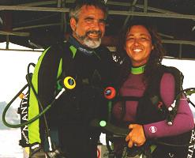 |
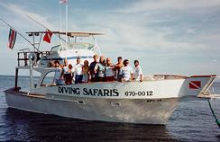 |
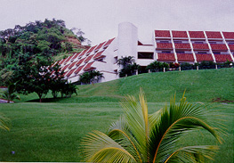
Villa Sol Hotel, the best 3-star seaside
resort on Costa Rica's Papagayo Gulf.
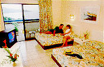
Villa Sol room.
|
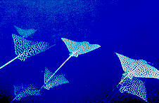 |
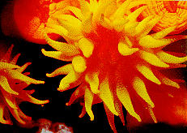 |
© Copyright U.S. Dive Travel Network.
COSTA RICA: the Pacific Coast
· Villa Sol Hotel & Beach Resort (formerly Sol Playa Hermosa)
· Bill Beard's Diving
Safaris
· Colorful Eco-Tours in
Costa Rica's Interior
[COSTA RICA DIVING PACKAGES for 2014 & beyond]
Ask about our all-inclusive vacation packages with all meals & drinks included.
Our 7-night dive packages in Costa Rica include 5 days of guided 2-tank boat diving
+ guides, tanks & weight belts provided + all local taxes + 3 meals for each guest daily.
New specials are announced periodically, so call us for up-to-the-minute updates --
Call our Costa Rica Dive Vacation Hotline, U.S. DIVE TRAVEL RESERVATIONS: 952-953-4124.
VILLLAS SOL HOTEL & BEACH RESORT -- SIZZLIN' SUMMER SPECIAL for FAMILIES:
Many off-peak seasons, resort owners allow kids under 12 stay to FREE in Villas Sol hotel rooms when sharing with two paying parents. Limit 2 children per room. Offer varies as resort owners set seasonal specials, so always check with our agents. Flamingo Beach Resort Accommodations available too. Breakfast Packages (All-Inclusive Packages also available. Call our agents for price updates. SPECIAL September & October rates for scuba diving & adventure tour packages at Villas Sol, All Inclusive, Hotel & Beach Resort for individuals, families, groups and honeymoon couples. Packages priced from approx $799 per non-diver / $999 to $1299 per scuba diver. Ask about a FREE third-tank dive when booking a minimum of four days diving during this period. Prices subject to change. Offer good while room & vessel space lasts.
|
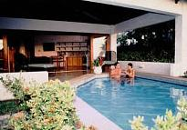 |
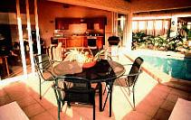 |
Your Bill Beard's Diving Safaris vacation package includes: 7 nights accommodation (double-occupancy) in an ocean-view room in Costa Rica's premier Pacific Coast diving resort + 6 days of guided 2-tank boat diving with the most experienced dive operation in Costa Rica + free snacks & beverages on the dive boat + hotel taxes paid. Round-trip transfers overland from San Jose to the Villa Sol Hotel via air-conditioned van are extra. Also extra are tips, drinks & meals each day of this Costa Rica dive resort package.
Call us about our discount wholesale airfares from most major U.S. cities, on Continental Airlines, to San Jose, Costa Rica. We often have the lowest wholesale airfares in the country to Costa Rica -- through our partner's special sweetheart contract. These tickets are in steep demand & often sell out early.
A new & well-appointed vacation property, Villa Sol Hotel is situated just above one of western Costa Rica's most renowned white-sand beaches, appropriately named Playa Hermosa, or The Beautiful Beach. Views from the rooms & the beach are sweeping & wonderful. The resort features 100 total rooms, 54 of which are deluxe. The deluxe rooms at Villa Sol Hotel offer 2 double beds, private bath, central A/C, walk-in closet, private terrace or balcony & daily maid service, with the kind of sweet-spirited service that only the ultra-gracious "Tico" people of Costa Rica can provide.
There are two swimming pools at Villa Sol, plus a tennis court, volleyball nets, jet skiing & kayaks available, as well as a mini-market, a car rental office & a passenger tram that carts guests from the beach to the hotel lobby. Villa Sol also features several in-house restaurants, bars & nightclubs, including a nifty poolside bar, where your favorite libations can be served as you float your stress away.
Since we all know that Costa Rica diving holidays need to encompass far more than simply scuba sorties -- because eco-tours abound in this verdant land -- Villa Sol & Bill Beard's Diving Safaris are within an easy day's drive of five national parks, wildlife sanctuaries & biological preserves -- the glory of inland Costa Rica. There's a vast number of visually exciting hikes, graded from gentle to strenuous, whatever you want, if you're willing to hoof it for verdant views. Costa Rica's eco-adventures are one of its top international claims to fame. The cloud forests in and near the Guanacaste Mountains are world-renowned. Once Bill Beard's Diving Safaris brings you back from their magical Costa Rica scuba diving world, your appetite for eco-tours may be pretty keen; if so read further on. We have eco-energy to the max down in Costa Rica!
At Bill Beard's Diving Safaris & also the Villa Sol Hotel, electricity is the same as in the U.S., so there are no worries for divers who bring small appliances, nor for underwater video buffs who need to recharge their battery packs. This beautiful property is located only a few blocks from Bill Beard's Diving Safaris' main office, & a short walk from the center of the village. This is THE nerve center for serious Costa Rica diving. Nadine & Bill Beard did a commendable job shaping & honing their keen little corner of Costa Rica.
Nadine & Bill Beard ran their Diving Safaris business on Costa Rica's Pacific Coast for more than 30 years, then sold it to a personable young couple from the States named Earl & Bobbi Jo. These new owners are widely regarded as the savviest & most reliable dive operators on the Northwest Coast of Costa Rica. This couple is basically one of the salient forces for safe, organized scuba diving in a Costa Rica that can be a bit benignly "manana" oriented. You'll enjoy the friendly expertise & relaxed competence their crew brings to the job. It's a couple blocks walk or tram ride down to your beach in front of Villa Sol Hotel, so the Bill Beard divemasters will keep your dive gear for you during your stay. They'll rinse & store it & have it ready for you the next morning, so you don't have to lug it back & forth at all. Bill Beard's Diving Safaris will pick you up by boat at the beach, or by van at your hotel entrance, whatever you prefer.
One of several facts that make Costa Rica diving quite pleasant most of the year is the mild climate in the Golfo de Papagayo region of Guanacaste state. Temperatures rarely go higher than 90 degrees F in the summer, or slide below 75 degrees in the winter, with water temps staying pretty stable between winter's 78 & summer's 82 degrees. Visibility averages about 40-50 feet from December through April. Then May through November the visibility -- especially in deep summer -- can reach 80 feet.
This is not a prime coral environment on the Northwest Coast of Costa Rica. This is not Fiji by any means, we must advise. What scuba divers come to see are the big critters: groupers, mantas, bull sharks, vast schools of gleaming jacks & rays, many of which converge on Murcielago Island, & around the sea pinnacles off El Ocotal. It's not uncommon on a typical Costa Rica diving trip to see a flying phalanx of eagle rays come soaring overhead, blocking the sun for a few seconds while your heart is pounding like a piston & you rush to grab your camera. Some of the best big-fish action in Central America is yours for the sheer enjoyment of it all, right here on the "Parrot Gulf." Pacific coastal Costa Rica is Big Critter Central in this hemisphere.
Nearly any month of the year on a Costa Rica diving tour you stand a decent chance of sighting the mammoth, adrenaline-coaxing, yet supremely gentle whale shark. The best time to increase your odds of sighting big schools of flapping manta rays at the Catalina Islands, 14 miles south of the Villa Sol Hotel, are December through May, where Bill Beard's diving crew has chanced upon as many as 50 of these wonderful creatures on one air tank! Some of these graceful manta rays flex wing spans from 12 to 20 feet across! Other classic dive sites that Bill Beard & the lads have developed include Punta Gorda, Escorpiones & Los Meros, where underwater camera buffs will have the chance to nab shots of the elusive harlequin shrimp, rare nudibranchs & more than 12 species of eels, all framed against a backdrop of delicate cream-white hydroids that seem transplanted from another distant planet of exceptional tranquility.
For couples who bring small children & need a sanity-enhancement break to accommodate their half-day dive trip, baby-sitting services are easy & affordable to contract at Villa Sol Hotel. (Don't worry, we love kids. Our three-family partnership has six chiquitos already!) For those who prefer a one- or two-bedroom condo instead of a hotel room, we can also secure these for you at extra cost.
Costa Rica dive vacations are popular with divers who want to blend mountain & rain forest eco-tours along with a relaxing coastal dive vacation. Costa Ricans are known for their gracious humor & outgoing displays of hospitality. Side tours & meals throughout rural Costa Rica are very economical if you want to ramble & roam a bit around the jungle countryside after your dive tour.
Costa Rica vacations are also renowned for the otherworldly peace, & the exotic birds & mammals of its misty cloud forests. Bring a big rain hat for the Costa Rica highlands -- that's a given !. Air tickets are extremely reasonable to Costa Rica & land costs for do-it-yourself eco-tour extensions are quite low as well. The sky & the sea are the limit down here. Que vengan Uds para gozar de la hermosura y la tranquilidad. Costa Rica realmente brilla.
Villa Sol pool.
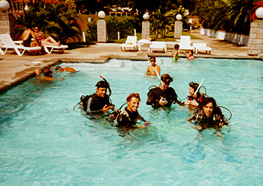
Novice divers getting their first taste
of happy bubbles at Villa Sol.

Hikers dissolving stress at a restful falls
on our Tabacon Hot Springs eco-tour.
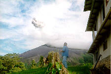
Arenal Volcano spews smoke & fire
day & night, sometimes producing
an eerie yet cheerful glow at night,
when clouds shroud the summit.
CONGRATULATIONS, BILL & NADINE !
Just to give you good folks a proper perspective of the Costa Rica scuba diving scene, here
is a little back story we feel is important to retell every year, since these people are so dear to us.
On August 15, 2010, Bill & Nadine Beard, who pioneered
safe & accessible scuba diving in the Golfo de Papagayo region of Costa
Rica�s Pacific Coast, celebrated 40 years of scuba diving in Costa
Rica. Our admiration & respect goes out to this wonderful
couple, who have spent most of their adult lives diligently serving dive
travelers throughout our hemisphere. Many are the divers who made their
way to Costa Rica, then returned home with colorful stories of the Bill Beard
family�s scuba diving prowess, their dive site explorations & their
warm hospitality. Bill y Nadine, les saludamos ! Felicitaciones por
un trabajo impresionante que han estado haciendo por mas que cuarto siglo.
Uds son buena gente, che!
Bill & Nadine Beard sent U.S. Dive Travel a detailed letter highlighting some salient aspects of their Sol Playa Hermosa dive vacation program. We have reprinted excerpts of that letter here below, some of which were edited for continuity:
Dear Diving Friends:
We are located on Playa Hermosa Beach in the Hotel Villa Sol, where we have daily 2-tank dive trips which leave at both 8:30 a.m. & 1:00 p.m. Our night dives meet at 5:45 p.m., because the sun sets early in our area. Along with our more than 25 local dive sites within 30 minutes from our shop, we offer longer range dive trips to the Catalina Islands & Bat Island groups. (Not to be missed !)
The best months for scuba diving in the Catalina Islands are December through May, when we have seen up to 50 manta rays -- with wingspans of 14 to 20 feet -- on a single dive. We dive the Bat Islands all year round, weather permitting; however, March through November are the optimum months for this long-range Bat Islands trip. Here we see the impressive 8-to-15-foot bull sharks, schools of cow-nosed rays, eagle rays and horse-eye jacks, spade fish, pompano, snapper & wahoo. (Yahoo!)
Our local dives offer many whitetip reef sharks, plus vast schools of grunts & yellowtails, spotted eagle rays, turtles, gigantic stingrays, angel fish, octopi, seahorses, starfish, frog fish & many, many species of eels. We have been lucky enough to see whale sharks up to 35 feet long on numerous occasions as well as spinner dolphins, humpback whales, pilot whales, Orcas & false killer whales. Also, we have seen schools of hundreds of mobula rays & thousands of cow-nose rays in one mega-school.
Water temperatures from mid-April to mid-January are generally from 75-82 degrees Fahrenheit at depth. Then from mid-January to mid-April, water temperatures vary from day to day, with thermoclines sometimes causing temps to dip to 70 degrees F at depth. The bottom line on warmth is this: you may want to bring a 3 mm wetsuit or more during this period. The outside temperature is 85 to 90 degrees nearly all year long.
The rainy season normally goes from May to November, with these months providing some of our best diving. This may seem contradictory, but because we are located in a protected gulf & have no rivers draining into our waters, the visibility is not adversely affected by the rain. In fact, it is often enhanced as the rain pushes down some of the silt & rich nutrients that are abundant in Costa Rica. Average visibility ranges from 30 to 40 feet. On some special occasions our "viz" reaches as far as 80 feet. On many days we like to dive volcanic rock formations & rock pinnacles. There is very little hard coral, but we do have some black coral, soft corals & the cup coral -- which is a spectacular sight to see on night dives.
Safety & customer enjoyment have been our goals for the many years we have been providing service to divers in Costa Rica. That holds especially for the 23 of our 27 Costa Rican years that we have been located here in the Gulf of Papagayo. During all these years we have had no serious injuries or accidents. We hope that you will come & give our full-service staff a chance to dive with you soon. We carry, set-up, wash & store all equipment so that you can enjoy your vacation without the hassles of lugging wet gear around. We look forward to your visit & the opportunity to dive with you.
Yours in diving,
Bill & Nadine Beard
Founders of Diving
Safaris
HERE�S WHAT SETS BILL BEARD'S
DIVING SAFARIS
APART from their DISTANT- SECOND
COMPETITORS:
1. Bill Beard was the first instructor, with the first and largest dive operation in Costa Rica. With 23 years experience diving this area, he is a bona fide scuba pioneer.
2. Bill Beard�s Diving Safaris offers you friendly, people-oriented instructors.
3. Bill Beard�s Diving Safaris is the only certified NITROX Facility in Costa Rica.
4. Bill Beard�s Diving Safaris has a perfect safety record: no serious accidents.
5. Diving Safaris offers 3 large, covered, safety equipped, customized dive boats.
6. You get courteous, non-smoking, PADI, NAUI, & IANTD Nitrox instructors.
7. You get world-class service on top of all of these other pluses. Bill Beard�s Diving Safaris was voted #2 Best Dive Operator in the Greater Pacific Region in the Top 100 Reader's Choice -- in a recent issue of Scuba Diving magazine, Bible of the Sport.
8. This is the best diving location in Costa Rica, especially for big-animal thrills.
9. The dive operation is independently owned & operated by Bill & Nadine Beard. No outside operations are dictating their adventure-diving policies.
10. "Our goal is to make your vacation memorable," Bill & Nadine affirm, with knowledge based on solid experience.
WHY the DIVING SAFARIS LOCATION
is the BEST
on COSTA RICA�s BEAUTIFUL PACIFIC
COAST:
1. Playa Hermosa is reached by a good reliable stretch of paved road. Other resorts are located on primitive dirt roads that get super-muddy during seasons of heavy rainfall.
2. Bill Beard�s Diving Safaris has special trams that take dive clients up & down the hill to the beach. Their competition does not have any such service for client convenience. Imagine � no more annoying schlepping of your wet gear bags up & down the steep inclines from your hotel to the vessel dock. Talk about easy & relaxing dive days ! This is pleasure diving to the Nth degree.
3. There are several other nice restaurants & shops on to check out in the Playa Hermosa area, while the competitors� areas have zilch to offer in this regard.
4. There are two mini-marts in Playa Hermosa, none in the other surrounding beach areas.
5. There are plenty of fun & affordable night-time activities in Playa Hermosa, such as a disco, bars, cafes, you name it. The other beach resort areas are very remote & isolated; so you�re stuck there at the mercy of their ho-hum on-site amenities.
6. Playa Hermosa has a beautiful big beach with clean sand & a nice feel to the area. In stark contrast, many of the other beach communities have much less to offer in the way of broad clean sandy beaches. Their oceanside sands are either dark & murky looking, or the beaches are tiny & uncomfortable in their ambiance.
7. Villa Sol Hotel has efficient, comfortable, modern central air conditioning. The competition simply does not. Sol Playa Hermosa Hotel is head & shoulders above the competition. Bill Beard�s Diving Safaris is all pro. Accept no imitators.
|
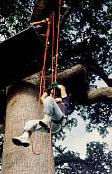 |
|
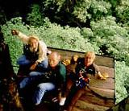
Go ahead & look down;
you're roped in safely!
COSTA RICA CLOUD FOREST & JUNGLE CANOPY ECO-TOURS
COLORFUL, SAFE, AFFORDABLE ECO-TOURS
in the WORLD-RENOWNED MOUNTAINS
of COSTA RICA's INTERIOR:
� OPTION #A: Chasm Canyon Cloud-Forest Canopy Tour (half-day) --
� OPTION #B: Los Inocentes Wildlife Refuge, Horseback (half-day) -- $115 per person.
� OPTION #1: Canopy Tour + Los Inocentes Horseback Tour (full-day) --
� OPTION #2: Arenal Volcano + Tabacon Hot Springs + Whitewater Rafting (1 night / 2 days) --
� OPTION #3: Arenal Volcano + Tabacon Hot Springs + Whitewater Rafting (2 nights / 3 days):
� OPTION #4: Los Inocentes + Arenal Volcano + Tabacon + Whitewater (4 nights / 5 days)
� OPTION #5: Monteverde Cloud Forest (2 nights / 3 days):
� OPTION #6: Monteverde Cloud Forest (3 nights / 4 days)
� OPTION #7: Arenal Volcano + Tabacon + Monteverde + Whitewater. (6 nights / 7 days):
� OPTION #8: Villa Sol Resort + Scuba Diving + Arenal Volcano + Tabacon Hot Springs +
Los Inocentes Wildlife Refuge + Whitewater Rafting.
(7 nights / 8 days / 4 dive days) NOTE: there's a discount for non-divers in dbl-occupancy rooms.
OTHER CUSTOMIZED ECO-TOUR OPTIONS
(All tours here below are customized, & dependent on guide availability.)
(Text blocks re' Costa Rica eco-tours appear courtesy of Bill Beard's Diving Safaris.)
RINCON de la VIEJA ECO-TOUR:
Two options for the Rincon de la Vieja Eco-Tour:
The Rincon de la Vieja Eco-Tours include: Box lunch + drinks + local fruits for refreshment + national park entry fees + full services of a trained biologist / wildlife guide + all transportation during the day.
ARENAL VOLCANO ECO-TOUR:
The Arenal Volcano Eco-Tour includes:
Box lunch + drinks + dinner + all transportation + naturalist guide + park fees.
The 2-day Arenal Volcano Eco-Tour includes:
One night's lodging + all meals at the lovely Tabacon Resort + naturalist guide + all tour transportation + park entry fees. The itinerary for the 2-day tour is as follows:
HACIENDA LOS INOCENTES ECO-TOUR:
Hacienda Los Inocentes Eco-Tour includes:
Lunch + drinks + all transportation + horseback riding + naturalist guide + park fees.
TEMPISQUE RIVER & PALO VERDE ECO-TOUR.
Palo Verde & Tempisque River Eco-Tour includes:
Lunch + drinks + tangy local fruits + services of an expert ornithologist (bird biologist) + vessel tour & guide + all ground transfers to & from vessel + park entry fees.
COSTA RICA PADDLE SPORTS:
Rodolfo's second love is scuba diving & when he is not on the river you can probably find him scuba diving with Bill Beard's Diving Safaris or out at the Cocos Islands with the Undersea Hunter. Rodolfo operates on three different rivers for our adventures. The Sarapiqui River which is a class II-III, Penas Blancas River also a class II-III & the Pacuare which is a class III-IV. This nation's climate & the rugged terrain of the landscape, offer an unique opportunity to enjoy a variety of swift rivers, dependable stream flows & warm waters on a year-round basis.
The white waters of Costa Rica have proved to be some of the best for river rafting in the world. It is not only the class levels they offer & the challenge they provide, but the stunning natural beauty that accompanies you downriver that makes white water rafting in Costa Rica a unique experience. Whether you are a first timer & just want to discover what it feels like to run down a river surrounded only by rain forest & a few native inhabitants or an old pro craving for new challenges, experiencing the white waters of Costa Rica will prove to be the experience you were looking for.
CLOUD FOREST CANOPY TOURS !!
FOR MORE INFORMATION or RESERVATIONS:
Contact: Susan & John Hessburg, Mgrs
U.S. DIVE TRAVEL Network
PMB 307 / Suite # 116
15050 Cedar Avenue S.
St. Paul, MN, USA 55124-7047
Reservations: 952-953-4124
E-mail: divetrip@bitstream.net
Website: www.usdivetravel.com
******************************************************
IMPORTANT REMINDER about PRICES & TARIFFS:
All Costa Rica diving package prices listed here are subject to possible change in this steadily evolving travel market. Costa Rica dive tour prices are traditionally stable, while air prices can fluctuate daily. Until air tickets are issued, all airlines reserve the right to change airfares without notice -- an industry standard. We at U.S. Dive Travel will price-protect you to the utmost of our professional ability; & that has been our pledge for one decade now. Our tropical vacation experts normally secure wholesale discount air tickets for our clients who book early enough to secure limited seats in the best price categories. Remember please, the federal government has deregulated airlines, so only they control their pricing -- not any travel professionals.
Unless specifically noted, these above Costa Rica scuba diving packages are prices for only the land-based portion of the dive resorts, in most cases reflecting double-occupancy rooms. At many Costa Rica diving resorts, there will be no triple-occupancy rooms offered. Some exceptions will be noted. International & commuter "island-hopper" airfares are always extra above these land costs. Nominal service fees are also extra for air tickets & the vessel + side tour components. The baseline tariffs for all clients start at $35 per person for the land portion + $30 pp for the air tickets. Late-booking clients may receive slightly higher tariffs on the lodging + diving at many of our dive resorts. Solo clients on our Costa Rica diving vacations may pay a single supplement during peak seasons to secure a private room -- normally 35% to 50% more than double-occupancy clients.
The preferred payment mode for all dive resorts & Costa Rica eco-tours is by cashier's check or wire transfer in U.S. dollars. All clients living outside the USA or Canada will need to pay for their dive vacations or Costa Rica eco-tours via direct wire transfer in U.S. dollars. No personal checks will be accepted for the land portion of any reservation. Thank you for your gracious understanding. Our service level -- for both scuba vacations & Costa Rica eco-tours -- is the highest & our prices the lowest in this industry, & thus we need to preserve a reasonable margin. For published-fare air ticket bookings, USDT always accepts Visa & Mastercard.
Remember, all Costa Rica diving tour clients to all foreign destinations will be asked by local officials overseas, upon departing the airport on your final day, to pay a nominal government departure tax, usually between USD $30 - $40 per client. USDT cannot collect this tax beforehand, so you simply pay it down there, in your host country. Be sure to stash away a little cash for this final moment at the airport, so you'll get your exit visa stamped quickly with no fuss; & away you go. Best of luck with your plans for Costa Rica eco-tours & Costa Rica dive travel. We hope your scuba diving vacation is a safe & satisfying adventure. Blessings & best wishes with ALL your Costa Rica dive vacations. And let's not forget the good ol' refrain -- Costa Rica eco-tours, Costa Rica eco-tours, Costa Rica eco-tours, Costa Rica eco-tours, Costa Rica eco-tours -- nothing but the finest green trekking in our hemisphere. Say it to Gaia, "Who loves you, baby?!"
Best fishes too!
>////*> <*\\\\<
John Hessburg, General Manager
Susan Hessburg, Operations Manager
Founding Partners of U.S. Dive Travel Network.
| Home / Dive Resorts / Live-Aboards / Snorkeling / Who We Are / Book a Trip |
© Copyright U.S. Dive Travel Network.